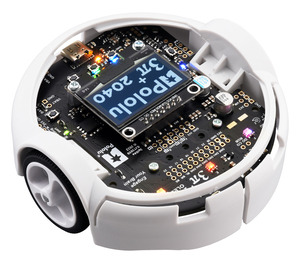

Support »
Pololu 3pi+ 2040 User’s Guide

View document on multiple pages.
- 1. Overview
- 2. Contacting Pololu
- 3. Assembling the 3pi+ 2040 kit
- 4. Using the preloaded example programs
- 5. Programming the 3pi+ with MicroPython
- 6. The 3pi+ 2040 in detail
- 7. Related resources
1. Overview
The 3pi+ 2040 is a versatile, high-performance, user-programmable robot that measures just 9.7 cm (3.8″) in diameter. At its heart is a Raspberry Pi RP2040 microcontroller (like the one on the Raspberry Pi Pico), a 32-bit dual-core Arm Cortex-M0+ processor running at 125 MHz, which can be programmed with C, C++, Arduino, or Python. The 3pi+ 2040 has 16 MB (128 Mbit) of flash memory that ships preloaded with a MicroPython interpreter, so you can get started right away by plugging into its USB C port and editing the included example Python programs. For advanced users who want to customize or enhance their robots with additional peripherals, the robot’s power rails, power system controls, and microcontroller’s I/O lines can be accessed via several 0.1″-pitch expansion ports.
|
|
|


The 3pi+ (or 3𝜋+) 2040 features two H-bridge motor drivers and a variety of integrated sensors, including a pair of quadrature encoders for closed-loop motor control, a complete inertial measurement unit (3-axis accelerometer, gyro, and magnetometer), five downward-facing reflectance sensors for line-following or edge-detection, and left and right bump sensors along the front face of the robot. Three on-board pushbuttons offer a convenient interface for user input, and a 128×64 graphical OLED display, buzzer, and six RGB LEDs allow the robot to provide feedback.
 |
 |
The robot also features a unique power system that runs the motors at a constant 8 V independent of the battery charge level, so the speed of the motors does not vary with the battery voltage.
1.1. Configurations and included components
The 3pi+ 2040 robot is available as a kit or fully assembled with three different motor options:
| 3pi+ 2040 Version | Products | Micro Metal Gearmotor | Top Speed | Comments |
|---|---|---|---|---|
| Standard Edition | assembled or kit | 30:1 MP 6V | 1.5 m/s | good combination of speed and controllability |
| Turtle Edition | assembled or kit | 75:1 LP 6V | 0.4 m/s | longest battery life, easiest to control, good for swarm robots or introductory robotics courses |
| Hyper Edition | assembled or kit | 15:1 HPCB 6V | ~4 m/s | very fast and difficult to control, easy to damage; only recommended for advanced users |
In addition, the 3pi+ chassis and 3pi+ 2040 control board are available separately and can be combined with the motors of your choice to make a custom kit.
A version of the 3pi+ robot based on the Arduino-compatible ATmega32U4 MCU is also available. See the 3pi+ 32U4 OLED Robot for more information.
3pi+ 2040 robot kit contents
 |
The kit versions of the 3pi+ 2040 robot include the following items:
- 3pi+ Chassis Kit, which includes:
- 3pi+ chassis, with integrated 4×AAA battery holder and ball caster
- 3pi+ bumper skirt
- two 3pi+ motor clips
- two 32×7 mm Pololu wheel hubs and silicone tires
- four single AAA battery contacts
- two double AAA battery contacts
- 1/2″-diameter plastic ball
- 3pi+ 2040 Control Board, which includes:
- control board
- buzzer
- jumper wires (for soldering motors to the main board)
- 1×7 low-profile male header for OLED display
- two magnetic encoder discs (12 CPR)
- four 3/16″ #2-56 screws and nuts
- two 1/4″ #2-56 standoffs
- two Micro Metal Gearmotors (the table above lists the specific motors included with each edition)
- graphical OLED display with black PCB
- spare 15:1 gearbox (Hyper Edition only)
 |
 |
The robot and chassis kit might include extra parts like jumper wires, screws, and nuts, so do not be concerned if you have some leftover hardware after assembling your 3pi+.
Assembled 3pi+ 2040 robot
The assembled versions of the 3pi+ 2040 robot are complete, ready-to-program robot platforms built from the same components found in the 3pi+ 2040 robot kits; no soldering or assembly is required.
 |
1.2. What you will need
These additional items are needed for using the 3pi+ 2040 robot:
- four AAA batteries—the robot works with both alkaline and NiMH batteries, though we recommend using rechargeable AAA NiMH cells
- USB C cable to connect the robot to your computer for programming and debugging
Kit assembly tools
These additional items are needed or helpful for assembling the 3pi+ 2040 robot kit:
- soldering iron and solder (we recommend one with adjustable temperature control)
- wire cutter
- small #1 Phillips screwdriver
- flush cutter, knife, and/or file for cutting supports on the bumper skirt (optional but recommended)
- Tape or small clamps (for holding parts together when soldering)
Additional optional components
You might also consider getting these for your 3pi+ 2040 robot:
- Sensors, such as proximity sensors or range finders
- Connectors and jumper wires, for connecting additional sensors and components
- Battery charger, if you are using rechargeable batteries; since the 3pi+ just uses ordinary AAA batteries, we recommend basic AAA chargers (into which you stick the individual cells) available at most general electronics stores, though we carry a much fancier iMAX-B6AC V2 balance charger/discharger that can be also used for this
1.3. Supported operating systems
The Pololu 3pi+ 2040 Robot can be programmed from practically any desktop or mobile operating system as long as it has a text editor and the ability to copy files to a USB drive. This includes Windows, Linux, macOS, and ChromeOS.
2. Contacting Pololu
We would be delighted to hear from you about any of your projects and about your experience with the 3pi+ 2040. You can contact us directly or post on our forum. Tell us what we did well, what we could improve, what you would like to see in the future, or anything else you would like to say!
3. Assembling the 3pi+ 2040 kit
This section explains how to assemble the kit version of the 3pi+ 2040 robot. If you have the pre-assembled version, you can skip to Section 4.
See Section 1.1 for a diagram to help you identify the contents of the 3pi+ 2040 robot kit.
The following video shows the steps to assemble a different version of the 3pi+ robot (the 3pi+ 32U4 OLED robot), but it is applicable to the 3pi+ 2040 robot as well (the physical differences do not affect the assembly process):
Testing the control board before assembly
- Before beginning assembly, plug the 3pi+ 2040 control board into USB and verify that it works by observing the behavior of its LEDs. You should see the six RGB LEDs flash briefly and the yellow indicator LED should also turn on and start fading in and out after six seconds. Disconnect the control board after you confirm it is working.
Battery contacts
- Insert the two double battery contacts into the bottom of the chassis as shown, making sure to put them on the correct side.
 |
- Insert the four single battery contacts into the top of the chassis as shown. Adjust them until they are centered, straight, and match the height of the double battery contacts.
 |
Motors and encoders
- After installing the tires on the wheels, press the output shaft of each motor into a wheel, with the flat side of the wheel hub facing the motor. The end of the gearbox shaft should end up flush with the outside of the wheel. A good way to do this is to set the wheel on a flat surface (like a table top) and press the motor shaft into the wheel until it contacts the surface.
 |
- Cut two of the included jumper wires in half to form four segments, and trim off the ends that are covered in adhesive (the adhesive could interfere with making a good electrical connection to the motor). These wire segments will be used as motor leads.
- Solder a pair of leads to each motor, paying attention to the way the motor will eventually be oriented in the chassis (see below). You might find it helpful to make a small bend at the tip of each lead to hook into the hole in the motor lead tab to hold it in place for soldering.
Warning: Holding the soldering iron against the motor lead for more than a few seconds can start to damage the motor brushes, so try to be reasonably quick/efficient with this soldering. If the first attempt does not go well, remove the soldering iron and let the motor cool for a few seconds before trying again.
 |
Each motor’s positive terminal is indicated by a plus sign (+) in the black plastic end of the motor. For consistency, we recommend soldering the motors to the control board with the positive terminal closest to the front, so you should attach the leads to allow the motors to be oriented this way. (Don’t worry if you accidentally get the orientation of one or both motors wrong, though. You can later correct for it in software with our 3pi+ 2040 libraries.)
- Press a magnetic encoder disc onto the motor shaft of each motor so that the end of the shaft is flush with the back of the disc. One easy way to accomplish this is to press the motor onto the disc while the disc is sitting on a flat surface, pushing until the shaft makes contact with that surface.
 |
- Place the motors into the channel in the middle of the chassis, aligning each gearbox with the grooves in the channel. The outer plate of the gearbox should be even with the edge of the chassis.
 |
Control board and bumper skirt
- Solder the buzzer to the 3pi+ 2040 control board.
 |
- Optional: This is a convenient time to add any other optional electronics or headers.
- Place the control board on the chassis. The motor leads and single battery contacts should be inserted into the corresponding through holes.
 |
- Screw the control board to the chassis: we recommend using two screws in the outermost holes of the front row and two standoffs in the outermost holes of the back row. In each of the four mounting holes, insert a #2-56 machine screw or standoff through the main board and chassis, and tighten it against a nut under the chassis. It is usually easier to place the nut into the recess first and hold it there with a finger or piece of tape while inserting the screw or standoff.
 |
- Trim off the excess length of wire from each motor lead.
 |
- Solder the motor leads to the main board.
 |
- Double-check the alignment of the battery contacts, then solder the single battery contacts to the main board.
 |
- Optional: We recommend cutting the three supports for the flaps on the front of the bumper skirt, since the flaps need to be able to deflect for the bump sensors on the 3pi+ 2040 to work. The easiest way to do this is with a pair of flush cutters, but you can also use diagonal cutters or a knife (which might leave behind bumps that you need to clean up with a file).
 |
- Install the bumper skirt by pushing the clips on each side over the motor housings until they snap into place.
 |
Display
- Solder the 1×7 low-profile header to the OLED display. The shorter side of the header should be inserted fully through the corresponding through holes from the bottom side of the display module until the header is flush, and the solder joints should be made on the top (screen) side of the display. Tip: Solder a single pin first and ensure the header is flush before making any additional solder joints. If the header is not flush, you can use the soldering iron to re-melt the solder joint while you make the necessary adjustments. Be careful not to touch the pin you are soldering as the heat will conduct all the way through to the other end!
 |
Installing header pins on the OLED display. |
|---|
- Plug the display into the matching female header on top of the main board. You can optionally use two more #2-56 screws to secure the OLED display to the standoffs.
Warning: The display header does not enforce proper orientation, so it is possible to plug the display in offset or rotated 180° from its intended position. Incorrect positioning can damage the display or the control board, so please take care during this step to ensure that the display is plugged in properly.
 |
Mounting the 3pi+ 2040 display. |
|---|
Ball caster and battery covers
- Press the ball caster into its socket on the bottom of the chassis.
 |
- Install four new or freshly charged AAA batteries in the battery compartment (we recommend using rechargeable AAA NiMH cells). The correct orientation for the batteries is indicated by the silkscreen markings printed on the bottom of the control board, visible through the slots in the chassis. Be careful not to reverse any of the batteries, or else the 3pi+ 2040 will not operate properly (although the control board will not be damaged).
 |
- Secure the battery compartment covers by first hooking their tabs into the corresponding slots at the outer edges of the battery compartments…
 |
- …and then pivoting the covers down until the clips snap into place.
 |
The assembly of your 3pi+ 2040 robot is now complete, and it is ready to be used!
 |
4. Using the preloaded example programs
The 3pi+ 2040 Robot ships with a set of pre-installed programs that demonstrate all of its features. You can try them out without installing any software, and later you can refer to them as programming examples (see Section 5). To get started, just power up the robot. There are two alternative ways to power the 3pi+:
- Install four charged AAA batteries and press the power button. The top blue LED next to the power button will illuminate, and the robot will turn on.
- Connect the robot to USB. The green LED next to the reset button will illuminate, and the robot will turn on automatically.
Note that if you are not using battery power, the motors will not run.
On startup, the 3pi+ will show this splash screen on its OLED display:
 |
After a few seconds it will switch to the menu of example programs, or you can press button C to proceed to the menu immediately. (On this screen you can also press A to exit the program or B for bootloader mode.)
 |
The menu shows a list of all the Python files installed at the top level of the MicroPython drive. As you can see above, it also tries to show the battery voltage for convenience. With batteries installed and the power circuit on, it should generally show a value of 4.8 V or higher. If batteries are not installed or the power circuit is off, this number will be some low value that doesn’t mean anything.
Navigate up and down the menu with buttons A and C, respectively, and press button B to run the selected file. When you are done with the one program, you can press the reset button to restart and return to the menu.
Here is a list of the pre-installed programs:
| File | Description |
|---|---|
| blink.py | Blinks the yellow LED on and off. |
| button_test.py | Lets you type letters with the three pushbuttons and the two bump sensors. Demonstrates debouncing by using a very slow setting for A: if you tap A twice quickly only the first press will be registered. |
| encoder_test.py | You can gently rotate the wheels by hand to see the wheel encoders measure rotation. For additional feedback, the yellow LED also toggles with each encoder tick. |
| error.py | Simply raises a Python exception. This shows how the built-in menu system helps debugging by emitting a sound and displaying the error on the screen. |
| face_uphill.py | Detects slanted surfaces and turns the robot to face uphill. |
| gyro_turn.py | Press A or C to make the robot turn 90° using the gyroscope. |
| imu_test.py | Continuously reads the on-board accelerometer, gyro, and compass and displays all 9 values to the screen. The values are also available with more resolution on the serial terminal. |
| ir_sensor_demo.py | Continuously reads the bump sensors and line sensors, displaying the results as a bar graph. You can press A to calibrate: the robot will immediately calibrate its bump sensors (which should not be pressed) then start continuously taking calibration readings from its line sensors. Slide the robot across a line, then press A when you are done calibrating. After calibration, press C to switch to calibrated reads for the line sensors. The bars for the bump sensors show as outlines when not pressed, and once calibrated they will be solid when detecting a press. |
| line_follower.py | A PID line follower designed to follow a black line on a white surface. Follow the on-screen instructions to calibrate and start it running. Note that it is intentionally not very well tuned; this is intended as a starting point that you can improve. |
| motor_test.py | Lets you run the left and right motors using buttons A and C. Hold a button to run the motor or tap it to change direction. |
| music.py | Plays a song on the buzzer while blinking the LEDs and displaying the beats and measure numbers. |
| rgb_demo.py | Demonstrates smoothly-changing rainbow effects on the RGB LEDs. |
| rotation_resist.py | Spins the robot to counteract rotation detected by the gyro. Do not move the while robot while it says “Calibrating…” on the display. |
| self_test.py | Tests basic functionality of the robot. You can also access this by holding A during startup. |
| siren.py | Demonstrates sound and light effects. |
| spin.py | Runs one motor forward and the other backward to spin the robot in place. Please disconnect your robot from USB for this one, and guard it to prevent it slipping off of a table or otherwise causing damage. |
| sys_info.py | Shows CPU information, the flash serial ID, MicroPython firmware version, and disk/RAM usage. |
| wall_bumper.py | Drives the robot forward until a collision is detected with the bump sensors, then backs up, turns, and continues. |
5. Programming the 3pi+ with MicroPython
5.1. Updating the MicroPython firmware
The 3pi+ 2040 Robot comes preloaded with our custom MicroPython firmware, which you can replace with your own programs or upgrade to a later version of MicroPython.
Checking the installed MicroPython version
Connect your 3pi+ to a computer with a USB C cable. If MicroPython is installed on the 3pi+, it should show up as a drive called “MicroPython” that contains a list of Python files:
 |
The dates shown for most of the files and folders will probably correspond to your firmware version, but to check the exact installed version of MicroPython, you will need to connect to the board with a serial terminal program. Here are some general-purpose terminal programs that work with the 3pi+:
- Google Chrome Labs serial terminal – very simple to get started with, web-based, for Chrome, Chromium, or Edge browsers only.
- Tera Term – Windows only.
- PuTTY – cross platform, available for Debian/Ubuntu with apt-get.
- (The Thonny editor that we describe in Section 5.3 also includes a serial terminal, but it requires a few more steps to get started.)
Connect the 3pi+ to your computer with a USB cable, run one of these serial terminal programs, and select the correct serial/COM port. Unless you have other serial devices plugged in, this will usually be the only serial port available, and since it’s a virtual serial port, the detailed settings like baud rate do not matter. Once you are connected, press Ctrl+C to exit the running program and Ctrl+B to display the current firmware version. For example, here is what it looks like in the Google Chrome Labs serial terminal:
 |
Connecting to the 3pi+ 2040 Robot with a serial terminal. |
|---|
In this example, the 3pi+ is running build 230302-9f9cc75, which is a custom edition of MicroPython version 1.19.1, built from commit 9f9cc75 of our MicroPython build scripts.
Firmware versions
The current release is:
- Build 240117-9512cf9 micropython-pololu-3pi-2040-robot-v1.22.1-240117.uf2 (2MB uf2)
Earlier releases are available on GitHub.
Upgrade instructions
Note: Loading a firmware file will delete all programs and data stored on your robot. Make sure you have anything you are working on backed up before you proceed.
Download the latest firmware above and connect your computer to the 3pi+ with a USB C cable. To get the board into bootloader mode, hold down Button B while pressing Reset. (You could also hold down the button while plugging in the cable.) You should see two green lights (VBUS and 3V3) indicating power, but nothing else should happen on the 3pi+. A folder like this should show up on your computer:
 |
There are a couple of files in there you can look at, but this is not a real drive like the MicroPython drive. You can’t store arbitrary data in it. All you can do is drop in a UF2-formatted binary to load that onto the robot’s flash memory.
Drop in the appropriate firmware file and in a few seconds you will have MicroPython installed. The RP2 drive will disconnect and immediately reconnect again, showing our demo programs.
5.2. Editing Python programs
With MicroPython installed on the robot, you can edit files directly on the board in any text editor. To get started, open blink.py on the MicroPython drive:
 |
The blink.py demo program in a text editor. |
|---|
This program turns the LED on for 100 ms and off for
600 ms, repeating forever. You can run this program from the menu
of demo programs as described in Section 4. Make a small change to it, such as replacing the 600 with 100, save the file, and select blink.py
from the menu again (you might need to reset the robot to get there.)
It will run your updated program with the new blinking pattern.
Now, you can look around at the other files on the board, modify them, make new files, and run any of them from the menu. All of the original demo programs and other files are also available in our GitHub repository.
Note: when editing files directly on the board, keep in mind that it is easy to lose them in various ways:
- Resetting or disconnecting the board while saving a file
- Editing files from within a MicroPython program and from your computer at the same time
- Loading a new firmware file that erases all data
- Software bugs or hardware failure
To avoid losing work, we recommend saving backup copies periodically on your computer.
5.3. Using the Thonny editor
Thonny is a Python editor for beginners that also includes advanced IDE features for editing and debugging code. After you download Thonny and install our plugin as described below, Thonny will recognize the 3pi+ and help you interact with the MicroPython interpreter running on its control board.
Installing Thonny and connecting to the 3pi+
Install the latest version from the Thonny website. Start the program, open the Tools menu, and click “Manage plug-ins…”:
 |
Search for “thonny-pololu”, select the corresponding plugin from PyPi, and click “Install”:
 |
Important: Restart Thonny after installing the plugin. Next, connect your robot to your computer with a USB cable. You should be able to select an option for the 3pi+ from the interpreter menu in the lower-right corner of Thonny:
 |
Your currently-running program on the 3pi+ will stop, and the “Shell” window will show a MicroPython prompt (“REPL”). (If it doesn’t connect or isn’t showing any output, try clicking “Stop” to get connected.)
Using Thonny to interact with the MicroPython interpreter
Next, you can try typing some commands in the Shell window:
Note: If Thonny does not show the “Pololu 3pi+ 2040 Robot” option here, something is wrong with the plugin install. You can program the board as a Pico or generic RP2040 board, but there will be more confusing options for file loading and saving.
 |
If basic commands work, you can try using the hardware on the 3pi+:
 |
Next, open blink.py in the Thonny editor. Assuming you
are still connected and see the MicroPython prompt, you can click the
green Run button at the top or press F5 to run it immediately. The LED
should begin blinking. To stop the program you can press Ctrl+C. Try
that now and run the code again with the Run button or F5. Make some
modifications and see that the blink pattern changes.
 |
If you save your changes, you will be able to access them from the demo menu system later. To start the demo program, press Ctrl+C (to stop the running program) then Ctrl+D (“soft” reboot).
Upgrading firmware with Thonny
Note: Loading a firmware file will delete all programs and data stored on your robot. Make sure you have anything you are working on backed up before you proceed.
You can also upgrade the MicroPython firmware with Thonny. Get the robot into bootloader mode as described in Section 5.1, and you will see an “Install MicroPython” option in the Thonny’s interpreter menu:
 |
Select this option and then find the appropriate firmware in the list:
 |
Thonny will automatically download and install our latest firmware version from the Internet.
5.4. Using the Mu editor
Mu is a very simple Python editor. It does not have many configuration options or keyboard shortcuts but is great for basic editing and learning Python. With a small modification described here, Mu can connect to the 3pi+ and help you interact with the MicroPython interpreter running on the board.
Install the latest version from the Mu website. Before you run it, locate the install folder (on Windows, this is probably %AppData%\..\Local\Programs\Mu Editor). Search for files named “pico”:
 |
Remove the .pyc file if it exists, and edit pico.py in a text editor. Add a line for the 3pi+ to the valid_boards section:
| 1 2 3 4 5 | valid_boards = [ # VID , PID, Manufacturer string, Device name (0x2E8A, 0x0005, None, "Raspberry Pi Pico"), (0x1FFB, 0x2043, None, "Pololu 3pi+ 2040 Robot"), # <-- add this line] |
Start Mu. If it does not immediately identify the board, click “Mode” and choose RP2040 from the menu. Then click REPL to get to the MicroPython prompt. You can try typing some commands there:
 |
Next, open blink.py in the Mu editor. Assuming you are
still connected and see the MicroPython prompt, you can click the Run
button at the top or press F5 to run it immediately. The LED should
begin blinking again. To stop the program you can click in the REPL area
and press Ctrl+C. Try that now and run the code again with the Run
button or F5. Make some modifications and see that the blink pattern
changes.
If you save your changes, you will be able to access them from the demo menu system later. To start the demo program, click in the REPL area and press Ctrl+C (to stop the running program) then Ctrl+D (“soft” reboot).
6. The 3pi+ 2040 in detail
|
|
6.1. Microcontroller
The 3pi+ 2040 features an integrated Raspberry Pi RP2040 microcontroller, a 32-bit dual-core Arm Cortex-M0+ processor with 264 kB of RAM, clocked with a 12 MHz crystal. This is the same microcontroller and crystal frequency used on the Raspberry Pi Pico. The RP2040 typically runs with a default system clock speed of 125 MHz, although it is rated for a maximum of 133 MHz and can sometimes be pushed even higher.
The control board includes a 16-megabyte (128-megabit) flash memory chip for program storage (non-volatile memory), and this comes preloaded with a MicroPython interpreter and example programs to help you get started quickly. For more information about programming the 3pi+ 2040 in Python, see Section 5.
The RP2040 has built-in USB support, and the control board has a USB Type-C connector that can be used to connect it to a computer (cable not included). This USB connection can be used to transmit and receive data and program the board over USB. The USB connection can also provide power for the microcontroller and most of the other hardware on the board (but not motor power); see Section 6.7 for more details.
The board also exposes the RP2040’s Serial Wire Debug (SWD) interface, which can be used to interactively debug a program running on the 3pi+ or to program the flash memory as an alternative to using USB. The debug port consists of two signals, SWDIO and SWCLK, along with a ground pin; these pins are labeled on the bottom side of the control board, and SWCLK is indicated with a small white triangle on the top side. To use the SWD interface with a standard desktop or laptop computer, you will need an external device, such as a Raspberry Pi Debug Probe or a Raspberry Pi Pico running the Picoprobe firmware.
6.2. User interface
|
|


Pushbuttons
The 3pi+ 2040 control board has five pushbuttons: a power button on the left, a reset button on the right, and three user pushbuttons located along the rear. Pressing the reset button connects the RUN pin to ground, and pressing one of the user pushbuttons pulls the associated I/O pin to ground through a resistor. The user pushbuttons, labeled A, B, and C, are on GP25, QSPI_SS_N, and GP0, respectively. Button B doubles as a BOOTSEL button to run the RP2040’s built-in USB bootloader if held on startup.
The three buttons’ I/O lines are also used for other purposes: GP0 is a display interface line, GP25 controls the yellow user LED, and QSPI_SS_N is the flash memory chip select pin (in addition to its BOOTSEL function). These uses require the pins to be driven by the RP2040, and reading QSPI_SS_N is not as straightforward as reading a normal GPIO pin. However, resistors in the button circuits ensure that the 3pi+ 2040 control board will not be damaged and operation will not be disrupted even if the buttons are pressed while the corresponding pins are being driven, and the functions in the 3pi+ 2040 Robot Libraries and Example Code take care of configuring the pins, reading and debouncing the buttons, and restoring the pins to their original states.
Indicator LEDs
The 3pi+ 2040 control board has six indicator LEDs, one of which is user-controllable:
- A yellow user LED is connected to GP25. You can drive this pin low in a user program to turn this LED on. The user LED is located near the USB connector at the rear of the board, and the 3pi+ 2040 libraries contain functions that make controlling it easier. The user LED shares the GP25 pin with button A.
The remaining five LEDs are power indicators:
- A blue power LED next to the power button indicates when the motor voltage regulator is active and producing 8 V (VM). The regulator is powered by the 3pi+’s batteries, so the power switching circuit must be turned on.
- A blue power LED on the left underside of the 3pi+ (closer to the power button) indicates when the logic boost regulator is active and producing 8.3 V (VBST). The regulator is powered by the 3pi+’s batteries, so the power switching circuit must be turned on.
- A blue power LED on the right underside of the 3pi+ (farther from the power button) indicates when the 3pi+’s 3.3 V logic buck regulator is receiving power (VB/VU). The input to the 3.3 V regulator can come from either the 8.3 V boost regulator or from USB, so this LED will be lit when either the power switching circuit is turned on or when the 3pi+ is plugged in to USB.
- A green power LED next to the USB connector indicates when the USB bus voltage (VBUS) is present.
- A green power LED near the reset button indicates when the 3pi+’s logic circuit, including the microcontroller, is receiving 3.3 V power (3V3).
RGB LEDs
The 3pi+ 2040 control board also features six individually-addressable RGB LEDs. Three of these are near the rear of the board by the pushbuttons, while the other three are along the front of the board. The RGB LEDs have integrated drivers compatible with the popular APA102 addressable LED, and they are chained together in alphabetical order (labeled A through F) and arranged counterclockwise on the board.
The control board uses SPI0, one of its two hardware SPI modules, on GP3 and GP6 (TX and SCK, respectively) to control the RGB LEDs. The 3pi+ 2040 libraries include functions that make it easier to control the RGB LEDs and use them together with the OLED display, which shares the SPI0 interface with the RGB LEDs. The display and RGB LEDs share a common pin for SPI0 TX (data), but use different pins for SPI0 SCK (clock), allowing them to be controlled separately.
The output signals from the last RGB LED are brought out to the DO (data out) and CO (clock out) pins, and you can use these pins to add more APA102-compatible RGB LEDs to the chain.
Buzzer
The buzzer included with the 3pi+ 2040 control board can be soldered into the designated through-holes and used to generate simple sounds and music (the buzzer is pre-installed on the assembled versions of the robot). By default, it is connected to GP7, which can be configured as PWM3 B to produce hardware pulse width modulation. If you alternate between driving the buzzer pin high and low at a given frequency, the buzzer will produce sound at that frequency. You can play notes and music with the buzzer using functions in the 3pi+ 2040 libraries. If you want to use GP7 for an alternate purpose, you can disconnect the buzzer circuit by cutting the surface-mount jumper next to the buzzer.
Display header
The 3pi+ 2040 control board has a 1×7 header where you can connect a graphical OLED module with a low-profile male header. The kit and assembled versions of the 3pi+ 2040 robot include an OLED display that has a resolution of 128×64 pixels and uses an SH1106 controller (1MB pdf), which the 3pi+ communicates with via its SPI0 module.
The 3pi+ 2040 libraries provide functions to show data on a connected display while also allowing the display interface lines to be used for other purposes (such as pushbutton inputs and RGB LED data).
6.3. Motors
The 3pi+ 2040 kit and robot are available with three different motor options:
| 3pi+ 2040 Version | Micro Metal Gearmotor | No-Load Performance at 6 V | Stall Extrapolation at 6 V | Top 3pi+ Speed |
|---|---|---|---|---|
| Standard Edition | 30:1 MP 6V | 720 RPM, 40 mA | 0.33 kg⋅cm, 0.67 A | 1.5 m/s |
| Turtle Edition | 75:1 LP 6V | 180 RPM, 20 mA | 0.64 kg⋅cm, 0.36 A | 0.4 m/s |
| Hyper Edition | 15:1 HPCB 6V | 2100 RPM, 100 mA | 0.25 kg⋅cm, 1.5 A | ~4 m/s |
The hyper edition is very difficult to control and fast enough to damage itself from impacts, so it is only recommended for advanced users. We strongly recommend keeping motor speeds below 50% on this version. A spare gearbox is included with this edition and instructions for installing it can be found here (note that this video was made for an older version of the 3pi+ robot, but the mechanical instructions for replacing the gearbox still apply to this newer 2040 version).
You can also assemble the 3pi+ chassis and 3pi+ 2040 Control Board with different motor and gear ratio combinations to make your own custom 3pi+ 2040 robot. Please keep in mind that using faster or lower-torque motors will make your robot more difficult to control.
 |
Two on-board motor drivers power the 3pi+ 2040’s two Micro Metal Gearmotors. Four GPIO pins are used to control the drivers:
- GP10 controls the right motor direction.
- GP11 controls the left motor direction.
- GP14 controls the right motor speed with PWM (pulse width modulation) generated by the RP2040’s PWM7 A channel.
- GP15 controls the left motor speed with PWM generated by the PWM7 B channel.
The 3pi+ 2040 Robot Libraries and Example Code provide functions that allow you to easily control the motors, and it can optionally take care of flipping a direction signal for you if you accidentally soldered in a motor backwards or are using a gear ratio with an odd number of stages, so the output turns the opposite direction from the input.
The 15:1 motors used on the Hyper Edition of the 3pi+ 2040 robot have gearbox output shafts that rotate in the opposite direction from the motors’ pinion gears (unlike the motors used in the other editions, where the directions are the same). For consistency, we install the motors with the positive terminal forward on all assembled 3pi+ 2040 robots, and we recommend building kits the same way.
This means the same inputs will produce different motor directions on a Hyper Edition robot compared to a non-Hyper robot, so a program written for one might need to be modified to work well on the other (by using the direction flipping functions provided by the 3pi+ 2040 libraries, for example).
Batteries and motor performance
As your batteries discharge, the voltage they supply will decrease. However, since the 3pi+ 2040 uses a regulated motor voltage (see Section 6.7 for more details), battery voltage does not typically have a major impact on the performance of the motors; they will be powered with 8 V as long as the motor voltage regulator is operating normally.
Even with a regulated motor voltage, the condition of the batteries starts to matter more as the motors draw more current (such as when accelerating, reversing, or stalled). The increased current draw of the motors causes the regulator to draw more current from the batteries in turn, and if this causes the battery voltage to drop below the regulator’s cutoff voltage, the regulator will turn off and stop powering the motors.
With the motor voltage regulator no longer drawing current, the battery voltage usually recovers a little, at which point the regulator is able to turn on again. As it starts drawing a high current to power the motors once more, the regulator enters a cycle of repeatedly turning off and back on many times a second, which effectively results in a kind of current limiting for the motors.
This behavior occurs more often with batteries that are drained than with freshly charged batteries, which means you might notice the performance of a 3pi+ 2040 decreasing as its batteries start to run out. (For example, it might accelerate more slowly or even be unable to reach as high of a top speed.) It can also come into play with older or lower-quality batteries, which tend to have higher internal resistances that cause more significant voltage drops. The Hyper Edition of the 3pi+ 2040 is most likely to be affected due to the greater current demanded by its high-power motors.
6.4. Quadrature encoders
Each drive motor on the 3pi+ 2040 has a corresponding quadrature encoder system consisting of a magnetic disc attached to the extended motor shaft and a pair of Hall effect sensors mounted on the control board. Other than the sensor orientation, these encoders work similarly to our magnetic encoder kits for Micro Metal Gearmotors. They can be used to track the rotational speed and direction of the robot’s wheels.
The encoders provide a resolution of 12 counts per revolution of the motor shaft when counting both edges of both channels. To compute the counts per revolution of a wheel, multiply the motor’s gear ratio by 12. For example, if 30:1 motors (which have gear ratios more accurately specified as 29.86:1) are used, the encoders provide 29.86 × 12 ≈ 358.3 CPR. The exact gear ratios of our Micro Metal Gearmotors are specified on their product pages.
Four GPIO pins are used to read the encoders:
- GP8 reads the right encoder channel A.
- GP9 reads the right encoder channel B.
- GP12 reads the left encoder channel A.
- GP13 reads the left encoder channel B.
For both encoders on the Turtle Edition and Standard Edition, channel B leads channel A when the motor is rotating in the forward direction; that is, B rises before A rises and B falls before A falls.
Since the motor directions on the Hyper Edition are reversed (see Section 6.3), the behavior described above corresponds to backward rotation instead on that version.
The 3pi+ 2040 Robot Libraries and Example Code provide appropriate functions for reading the encoders and keeping track of their counts.
6.5. Line and bump sensors
The 3pi+ 2040 features five downward-facing line sensors and two forward-facing bump sensors.
The five line sensors are on the underside of the board along the front edge and can help the 3pi+ distinguish between light and dark surfaces. Each reflectance sensor consists of a down-facing infrared (IR) emitter LED paired with a phototransistor that can detect reflected infrared light from the LED. The reflectance sensors operate on the same principles as our RC-type QTR reflectance sensors: the RP2040 uses an I/O line to drive the sensor output high, and then measures the time for the output voltage to decay. You can read more about the operating principles of these sensors in our QTR Reflectance Sensor Application Note.
The five line sensors are numbered 1 through 5, with line sensor 1 being the robot’s left-most sensor. In the schematics, they are referred to as DOWN1, DOWN2, DOWN3, DOWN4, and DOWN5. On the control board, their signals are labeled DN1, DN2, DN3, DN4, and DN5. The infrared emitters for the line sensors are controlled by the DOWNEMIT signal, which is labeled DNE on the board.
The two bump sensors are also reflectance sensors, but rather than providing simple reflectance readings, these are designed to measure changes in reflected light as the corresponding bump sensor flaps on the front of the 3pi+’s bumper skirt are pressed (deflected). This allows the 3pi+ to detect when it has contacted another object in front of it and determine which side the contact is on.
The left and right bump sensors’ signals are labeled BUMPL and BUMPR in the schematics and BL and BR on the control board. The infrared emitters for the bump sensors are controlled by the BUMPEMIT signal, which is labeled BE on the board.
Each sensor output is protected by a 220 Ω resistor to help prevent short circuits when the RP2040 is driving the corresponding I/O line.
The infrared emitters for the line sensors can interfere with the bump sensors’ readings when they are on, and the reverse is also true, so it is best to only have one set of emitters on at a time. This means that it is generally impractical to read both the line sensors and bump sensors at the same time.
The 3pi+ 2040 Robot Libraries and Example Code provide functions to help with reading the line sensors and bump sensors, and it handles control of the emitters appropriately.
Ambient light considerations
Since the line sensors and bump sensors rely on measurements of reflected infrared light, they are strongly affected by ambient sources of IR light in the surrounding environment (e.g. sunlight or strong incandescent lighting).
You can help compensate for ambient IR light by incorporating some calibration procedures in your programs. For example, the line sensors can measure the reflectance of light and dark surfaces during calibration and then report subsequent readings relative to this range, while the bump sensors can take baseline readings with the skirt flaps in their unpressed positions and then detect presses based on differences from the baselines. The 3pi+ 2040 libraries provide support for calibrating both types of sensors in these ways.
However, this calibration is not foolproof; too much ambient infrared light can still prevent the line sensors and bump sensors from working well, and the calibration will not remain effective if the ambient light level changes, such as if the 3pi+ moves from a brightly lit area to a more shaded area. The bump sensors can be especially susceptible to spurious or missed detections since they work by detecting changes in the IR light intensity.
Pin assignments and remapping
By default, the line and bump sensors support these pin assignments:
- GP26 is connected to the line sensor emitter control pin (DNE).
- GP22 is connected to line sensor 1 (DN1).
- GP21 is connected to line sensor 2 (DN2).
- GP20 is connected to line sensor 3 (DN3).
- GP19 is connected to line sensor 4 (DN4).
- GP18 is connected to line sensor 5 (DN5).
- GP17 is connected to the left bump sensor (BL).
- GP16 is connected to the right bump sensor (BR).
- GP23 is connected to the bump sensor emitter control pin (BE).
GP26 also doubles as an input to measure the battery level through a voltage divider (see Section 6.7), which uses a ratio low enough that the line sensor emitters will effectively be off while the pin is an input.
The line and bump sensor connections are made through traces connecting pairs of through-holes in the front expansion header of the 3pi+ 2040 control board. A connection can be remapped by cutting the corresponding trace on the underside of the board and making a new connection between the sensor signal and another GPIO pin of your choice.
 |
Bottom view of the 3pi+ 2040 Control Board, showing cuttable traces for remapping sensors. |
|---|
6.6. Inertial sensors
The 3pi+ 2040 includes on-board inertial sensors that allow it to determine its own orientation by implementing an inertial measurement unit (IMU). The first chip, an ST LSM6DSO, combines a 3-axis accelerometer and 3-axis gyro into a single package. The second chip is an ST LIS3MDL 3-axis magnetometer.
The RP2040 can communicate with these two chips using I2C0, one of its two hardware I²C modules. The I²C clock lines (SCL) of both chips are connected to GP5 and pulled up by a 10 kΩ resistor. The I²C data lines (SDA) of both chips are connected to GP4 and pulled up by a 10 kΩ resistor.
Using the sensors
The example Python program imu_test.py in the 3pi+ 2040 Robot Libraries and Example Code shows how to configure the sensors, read data from them, and display the readings on the OLED display.
Notes on the magnetometer
Please note that the magnetometer on the 3pi+ 2040 can be affected by magnetic fields from the 3pi+ itself. These include magnets in the motors and encoders, electrical currents through the board, and hard iron distortions from metal (probably mostly from the batteries). The magnetometer is positioned as far away from the motors as possible to avoid interference from them, but hard iron distortions can still influence the readings significantly, making it difficult to accurately determine the 3pi+’s absolute heading based on the raw magnetometer data.
This post on the Pololu forum details a technique for correcting for hard iron distortions, making it possible to use the magnetometer as a compass for navigation in environments that are not dominated by magnetic interference. (It is written about our Balboa 32U4 robot, but the same principles apply to the 3pi+.)
6.7. Power
The 3pi+ 2040 control board includes battery terminal connections that provide access to power from the 3pi+ chassis’s four-AAA battery compartment. We recommend using rechargeable AAA NiMH cells, which results in a nominal voltage of 4.8 V (1.2 V per cell). You can also use alkaline cells, which would nominally give you 6 V.
The negative battery voltage is connected to GND. The positive battery voltage is designated VBAT. VBAT feeds into a reverse protection circuit and then a power switching circuit controlled by the on-board pushbutton. The output of the power switching circuit is designated VSW.
VSW provides power to the on-board motor voltage regulator, and that regulator’s output (VM) powers the DRV8838 motor drivers, so the motors can only operate if the batteries are installed and the power switch circuit is on.
The reverse protected and switched battery voltage on VSW can be monitored through a voltage divider that is connected to GP26. The divider outputs a voltage that is equal to 1/11 of the battery voltage. The 3pi+ 2040 Robot Libraries and Example Code provide functions that can be used to determine the battery voltage from this reading. GP26 is also used to control the line sensor infrared emitters (see Section 6.5); the low divider ratio ensures that the emitters are effectively off even while the pin is being used as an input to measure the battery voltage.
Power switch circuit
The 3pi+ 2040 control board uses the patented latching circuit from the Pololu pushbutton power switch, which provides a solid-state power switch for your robot controlled with the on-board pushbutton. By default, this pushbutton can be used to toggle power: one push turns on power and another turns it off. Alternatively, a separate pushbutton can be connected to the PWRA and PWRB pins and used instead. Multiple pushbuttons can be wired in parallel for multiple control points, and each of the parallel pushbuttons, including the one on the board itself, will be able to turn the switch on or off. The latching circuit performs some button debouncing, but pushbuttons with excessive bouncing (several ms) might not function well with it.
Alternatively, to disable the pushbutton, you can cut the button jumper labeled Btn Jmp; this allows you to connect a slide or toggle switch to control the board’s power instead. The switch should be wired such that it connects the SW pin to GND when it is closed, and a set of three through-holes along the left edge of the board provide a convenient place to do so (the third hole is not connected to anything but helps accommodate 3-pin switches).
The power switch circuit also offers several alternate pushbutton connection options that result in push-on-only or push-off-only operation, and additional inputs enable further power control options like allowing your robot to turn off its own power. These advanced control options are available through the button connection pins and four control inputs:
| PIN | Description |
|---|---|
| PWRA | Connect through momentary switch to pin “PWRB” for standard push-on/push-off operation. Connect through momentary switch to ground for on-only operation. |
| PWRB | Connect through momentary switch to pin “PWRA” for standard push-on/push-off operation. |
| ON | A high pulse (> 1 V) on this pin turns on the switch circuit. This pin only functions when pushbutton operation is enabled (i.e. the button jumper has not been cut). |
| OFF | A high pulse (> 1 V) on this pin turns off the switch circuit (e.g. allowing a powered device to shut off its own power). This pin only functions when pushbutton operation is enabled. |
| CTRL | With pushbutton operation enabled, this pin directly determines the state of the switch circuit. A high pulse (> 1 V) on this pin turns on the switch; a low pulse (e.g. driving the pin low with a microcontroller output line or pushing a button connected from this pin to ground) turns the switch off. Leave this pin disconnected or floating when not trying to set the switch state. Note that this pin should not be driven high at the same time the “OFF” pin is driven high. |
| SW | With pushbutton operation disabled (button jumper cut), this pin controls the state of the switch circuit: driving it low turns the switch on, while letting it float turns the switch off. Connect through slide or toggle switch to ground for on/off operation. Leave this pin disconnected or floating for proper pushbutton operation. We recommend only ever driving this pin low or leaving it floating; this pin should never be driven high while the slide switch is in the “On” position. |
Motor voltage regulator
VSW supplies power to a regulator that provides 8 V for the 3pi+’s DRV8838 motor drivers. This regulated motor voltage helps keep the performance of the motors consistent as the batteries discharge and their voltage drops. However, the condition of the batteries can still have an impact on motor performance in some situations; see Section 6.3 for more details.
The 3pi+’s motor voltage regulator is designed to cut out at a higher voltage than its 3.3 V logic voltage regulator circuit. This way, if there is a significant transient drop in battery voltage due to the motors drawing a large amount of current, the motor voltage regulator will turn off and ensure that the battery voltage does not continue to fall. (Otherwise, the battery voltage could drop low enough to disable the logic regulator and cause the RP2040 to reset.)
3.3 V logic power circuit
The 3pi+ 2040’s logic power can come from either its batteries or its USB connection. When VSW is available, it powers the logic boost regulator, whose output is designated VBST and is normally 8.3 V. This output is not directly user-accessible, but both VBST and the 5 V USB bus voltage VBUS are connected through diodes to a supply called VB/VU (in other words, VB/VU is the result of ORing VBST and VBUS together).
VB/VU provides power for the logic buck regulator, which converts it into the 3.3 V logic voltage (designated 3V3) that supplies the control board’s logic circuitry, including the RP2040, sensors, RGB LEDs, and buzzer. The rest of the 3.3 V regulator’s achievable output current can be used to power other devices; under typical conditions, up to 1.5 A of current is available from 3V3 when the 3pi+ is running on battery power.
Since VBST (when present) is normally higher than VBUS, the 3pi+ will prefer to draw logic power from its batteries over USB when both are present, but it will still receive logic power from USB even when the power switch circuit is off. This can be useful if you want to upload or test a program without drawing power from the batteries and without operating the motors. It is safe to have USB connected and battery power switched on at the same time.
 |
Topology of the 3pi+ 2040 Control Board power circuits. |
|---|
Power distribution
- VBAT is connected to the battery contact labeled BAT+ and provides a direct connection to the battery supply.
- VSW is the battery voltage after reverse-voltage protection and the power switch circuit.
- VM is the output of the on-board 8 V motor voltage regulator.
- VBST is the output of the on-board 8.3 V logic boost regulator. (This output is not user-accessible.)
- VB/VU is the input for the 3.3 V logic buck regulator; it normally comes from VBST through a diode, but it can come from 5 V USB power (VBUS) if VBST is not present or too low.
- 3V3 is the output of the 3.3 V logic buck regulator.
See Section 6.8 for a diagram of the board’s power access points.
6.8. Expansion headers and power distribution
The 3pi+ 2040 control board has several expansion headers (primarily in two areas toward the front of the board) that break out many of the general-purpose I/O lines from the RP2040 microcontroller. Various power inputs, outputs, and control pins are also accessible elsewhere on the board. The following diagrams identify the locations of these pins and the hardware associated with them. These diagrams are also available as a printable PDF:
For more information about the RP2040 microcontroller and its peripherals, see the RP2040 datasheet.
 |
3pi+ 2040 Control Board pinout and peripherals. |
|---|
 |
3pi+ 2040 Control Board power distribution and control. |
|---|
6.9. Pin assignments
The table below lists each general-purpose I/O pin on the RP2040 and what it is connected to on the 3pi+ 2040. This table is helpful if you want to add your own electronics to the 3pi+ 2040 or write your own low-level code for interfacing with the hardware.
The “RP2040 functions” column lists the most relevant RP2040 peripheral functions. The peripheral functions commonly used by our example code are shown in bold. For a complete list of these functions, see the “GPIO functions” section of the RP2040 datasheet.
The “3pi+ 2040 functions” column documents the electronics that the pin is connected to on an unmodified 3pi+.
The “3pi+ header” column says which of the expansion headers, if any, include the pin. The locations of these headers are shown in Section 6.8.
| Pin | RP2040 functions | 3pi+ 2040 functions | 3pi+ header | ||||
|---|---|---|---|---|---|---|---|
| GP0 | SPI0 RX | UART0 TX | I2C0 SDA | PWM0 A | Button C Display data/command select (D/C) |
Display | |
| GP1 | SPI0 CSn | UART0 RX | I2C0 SCL | PWM0 B | Display reset (RESET) | Display | |
| GP2 | SPI0 SCK | UART0 CTS | I2C1 SDA | PWM1 A | Display clock (SCK) | Display | |
| GP3 | SPI0 TX | UART0 RTS | I2C1 SCL | PWM1 B | Display data (MOSI), RGB LED data |
Display, RGB (indirect) |
|
| GP4 | SPI0 RX | UART1 TX | I2C0 SDA | PWM2 A | Inertial sensors SDA | Mid expansion | |
| GP5 | SPI0 CSn | UART1 RX | I2C0 SCL | PWM2 B | Inertial sensors SCL | Mid expansion | |
| GP6 | SPI0 SCK | UART1 CTS | I2C1 SDA | PWM3 A | RGB LED clock | Mid expansion, RGB (indirect) |
|
| GP7 | SPI0 TX | UART1 RTS | I2C1 SCL | PWM3 B | Buzzer PWM | Mid expansion | |
| GP8 | SPI1 RX | UART1 TX | I2C0 SDA | PWM4 A | Right encoder A | ||
| GP9 | SPI1 CSn | UART1 RX | I2C0 SCL | PWM4 B | Right encoder B | ||
| GP10 | SPI1 SCK | UART1 CTS | I2C1 SDA | PWM5 A | Right motor direction | ||
| GP11 | SPI1 TX | UART1 RTS | I2C1 SCL | PWM5 B | Left motor direction | ||
| GP12 | SPI1 RX | UART0 TX | I2C0 SDA | PWM6 A | Left encoder A | ||
| GP13 | SPI1 CSn | UART0 RX | I2C0 SCL | PWM6 B | Left encoder B | ||
| GP14 | SPI1 SCK | UART0 CTS | I2C1 SDA | PWM7 A | Right motor PWM | ||
| GP15 | SPI1 TX | UART0 RTS | I2C1 SCL | PWM7 B | Left motor PWM | ||
| GP16 | SPI0 RX | UART0 TX | I2C0 SDA | PWM0 A | Right bump sensor (BR) | Front expansion | |
| GP17 | SPI0 CSn | UART0 RX | I2C0 SCL | PWM0 B | Left bump sensor (BL) | Front expansion | |
| GP18 | SPI0 SCK | UART0 CTS | I2C1 SDA | PWM1 A | Line sensor 5 (DN5, rightmost) | Front expansion | |
| GP19 | SPI0 TX | UART0 RTS | I2C1 SCL | PWM1 B | Line sensor 4 (DN4) | Front expansion | |
| GP20 | SPI0 RX | UART1 TX | I2C0 SDA | PWM2 A | Line sensor 3 (DN3) | Front expansion | |
| GP21 | SPI0 CSn | UART1 RX | I2C0 SCL | PWM2 B | Line sensor 2 (DN2) | Front expansion | |
| GP22 | SPI0 SCK | UART1 CTS | I2C1 SDA | PWM3 A | Line sensor 1 (DN1, leftmost) | Front expansion | |
| GP23 | SPI0 TX | UART1 RTS | I2C1 SCL | PWM3 B | Bump sensor emitter control (BE) | Front expansion | |
| GP24 | SPI1 RX | UART1 TX | I2C0 SDA | PWM4 A | Mid expansion | ||
| GP25 | SPI1 CSn | UART1 RX | I2C0 SCL | PWM4 B | Yellow LED / Button A | ||
| GP26 | SPI1 SCK | UART1 CTS | I2C1 SDA | PWM5 A | ADC0 | Battery level input (VBAT/11), Line sensor emitter control (DNE) |
Front expansion |
| GP27 | SPI1 TX | UART1 RTS | I2C1 SCL | PWM5 B | ADC1 | Mid expansion | |
| GP28 | SPI1 RX | UART0 TX | I2C0 SDA | PWM6 A | ADC2 | Mid expansion | |
| GP29 | SPI1 CSn | UART0 RX | I2C0 SCL | PWM6 B | ADC3 | Mid expansion | |
| QSPI_SS_N | Flash chip select, BOOTSEL | Button B | |||||
| RUN | Active-low reset | Reset button | Debug header | ||||
| SWCLK | Serial Wire Debug (SWD): clock | Debug header | |||||
| SWDIO | Serial Wire Debug (SWD): data I/O | Debug header | |||||
6.10. Adding electronics
This section gives tips for how to expand the 3pi+ 2040 with additional electronics.
Free I/O pins
The pins GP24, GP27, GP28, and GP29 are free I/O pins that are not used for anything on the 3pi+ 2040. Each of these pins is accessible on the mid expansion header, and can be used as a general purpose input, digital output, or PWM output. Three of the pins (GP27, GP28, and GP29) can be used as analog inputs.
The 3pi+ 2040 has several traces that you can cut to disconnect I/O pins from their on-board functions, freeing them up for other uses. The front expansion header contains cuttable traces for the pins used by the IR sensors: GP16, GP17, GP18, GP19, GP20, GP21, GP22, GP23, and GP26. In the OLED display area, there is a cuttable SMT jumper for GP7 labeled “7 = Buzzer” and one for GP26 labeled “BAT LEV = 26”. The RP2040 functions available on these pins are documented in Section 6.9.
Adding an I²C device
There are two types of devices that can connect to an I²C bus: a controller is a device that initiates transfers of data, generates clock signals, and terminates transfers, while a target is a device that is addressed by a controller.
You can add I²C devices to the 3pi+ 2040 by connecting the SDA pin of each device to GP4 and connecting the SCL pin of each device to GP5. Both of those pins are available on the mid expansion header. These are the same pins used by the inertial sensors documented in Section 6.6, so the I²C addresses of any targets you add here must be different than the I²C addresses of the inertial sensors. The LIS3MDL uses address 30 (0b0011110) and the LSM6DSO uses address 107 (0b1101011). The GP4 and GP5 pins are each pulled up to 3.3 V with a 10 kΩ resistor.
The RP2040 acts as an I²C controller on the GP4/GP5 bus when it accesses the inertial sensors. If you are adding another I²C controller to the bus, it is probably best to avoid the complexity of a multi-controller setup and instead configure the RP2040 to be an I²C target (or not use the bus at all).
Another option is to add an I²C device by connecting its SDA pin to GP28 and connecting its SCL pin to GP29. These are free I/O pins that are not used for anything on the 3pi+ 2040. However, note that if you want to use hardware I2C on these pins, you would need to use the RP2040’s I2C0 module, which is the same one used for the inertial sensors on GP4 and GP5. To work around this conflict, you could use a software I²C implementation for one of the busses or consider adding code to change the I2C0 pin function selections dynamically.
Any I²C devices you add must be compatible with the 3.3 V levels used by the RP2040 or use a level shifter.
Adding a UART serial device
The RP2040’s UART0 module is available on the free I/O pins GP28 (TX) and GP29 (RX). Alternatively, if you remove the OLED display, you can use UART0 on GP0 (TX) and GP1 (RX). Any UART serial devices you add must be compatible with the 3.3 V levels used by the RP2040 or use a level shifter. The RP2040’s I/O pins are not 5 V tolerant.
Adding an SPI device
If you remove the OLED display, you can use the RP2040’s SPI0 module on pins GP0 (RX), GP1 (CSn), GP2 (SCK), and GP3 (TX). The RGB LEDs typically use SPI0, but it is possible to work around this conflict by changing the SPI0 pin function selections dynamically, and the libraries we provide for the 3pi+ 2040 OLED and RGB LEDs show how to do this.
Another option is to disconnect GP26 from the line sensor emitter control line (DNE) by cutting a trace on the front expansion header. Then you can use the RP2040’s SPI1 module on pins GP26 (SCK), GP27 (TX), GP28 (RX), and GP29 (CSn). The RP2040 normally uses GP26 to control the line sensor emitters and read the battery voltage, so if you need those functions then you would have to find an alternative way to perform them.
6.11. Schematics and dimensions
The schematic diagram for the 3pi+ 2040 Control Board is available as a PDF:
- 3pi+ 2040 Control Board schematic diagram (305k pdf)
Dimensions
Basic dimension diagrams are available as PDFs for the 3pi+ 2040 Control Board by itself as well as the assembled 3pi+ 2040 robot:
- 3pi+ 2040 Control Board dimension diagram (2MB pdf)
- 3pi+ 2040 Robot dimension diagram (2MB pdf)
Dimensions that are not included in the above diagrams can be measured from the following DXF drawings:
- 3pi+ 2040 Control Board drill guide (65k dxf)
- 3pi+ 2040 Robot front, top, and side views (420k zip)
3D models of the 3pi+ 2040 Control Board and robot are also available in STEP format:
- 3pi+ 2040 Control Board 3D model (27MB step)
- 3pi+ 2040 Robot 3D models (18MB zip)
- Note: This model uses simplified models of the control electronics to reduce the file size.
7. Related resources
The Pololu 3pi+ 2040 Robot Libraries and Example Code repository is the main example code resource we provide, with examples in Python and C.
To learn more about programming the RP2040 in Python, see the following resources:
- Raspberry Pi Pico Python SDK (PDF)
- MicroPython documentation
- MicroPython source code
- The Python Lanuage Reference
- The Python Standard Library: MicroPython implements a subset of this
To learn more about programming the RP2040 in C, see the following resources:
- Getting started with Raspberry Pi Pico (PDF)
- Raspberry Pi Pico SDK documentation
- Raspberry Pi Pico SDK source code
- Raspberry Pi Pico SDK examples
These are some general resources about the RP2040:
- Raspberry Pi microcontrollers documentation
- picotool is a tool for interacting with RP2040 devices when they are in BOOTSEL mode
Datasheets for some of the components of the 3pi+ 2040 are available below:
- RP2040 datasheet
- SH1106 OLED driver datasheet (1MB pdf)
- Texas Instruments DRV8838 motor driver datasheet
- ST LIS3MDL 3-axis magnetometer datasheet (2MB pdf)
- ST LSM6DSO 3D accelerometer and 3D gyroscope datasheet (3MB pdf)
Finally, we would like to hear your comments and questions on the Pololu Robotics Forum!
Related Products
Same-day shipping, worldwide
|
US toll free: 1-877-7-POLOLU ~
(702) 262-6648 |
||||||||||||||||
| Catalog | Forum | Blog | Support | Ordering | Distributors | About | Contact | |||||||||
|---|---|---|---|---|---|---|---|---|---|---|---|---|---|---|---|---|